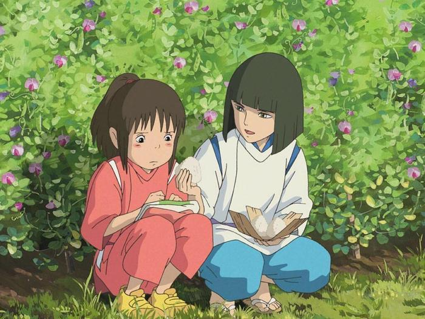
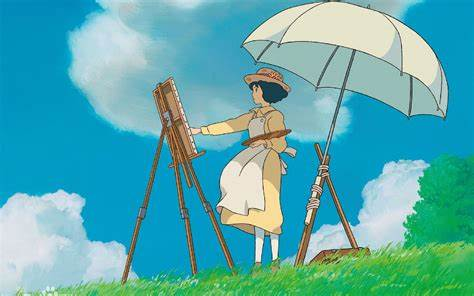
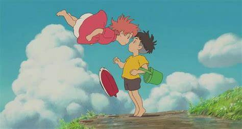
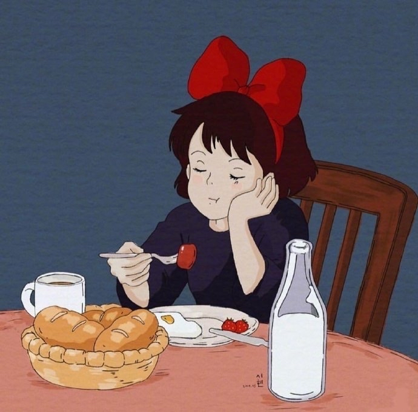

宫崎骏可以说是日本动画界的一个传奇，可以说如果没有他的话，日本的动画事业将会大大逊色。 他是第一位将动画上升到人文高度的思想者，同时也是日本三代动画家中，承前启后的精神支柱人物。 宫崎骏在打破手冢治虫巨人阴影的同时，用自己坚毅的性格和永不妥协的奋斗又为后代动画家做出了榜样。 宫崎骏的动画片是能够和迪斯尼、梦工厂共分天下的一支重要的东方力量。宫崎骏的每部作品，题材虽然不同，但却将 梦想、环保、人生、生存这些令人反思的讯息，融合其中。他这份执著，不单令全球人产生共鸣，更受到全世界所重视，就连 美国动画王国迪斯尼，都要斟介宫崎骏的动画电影发行版权。
温情感动
宫崎骏的动漫画面细腻，对人物的塑造也十分得体，而且他的每一部动漫都蕴含了丰富的人生哲理
放眼未来
是宫崎骏本身的忧虑，通过他的作品我们能看到他对人类命运和前途的担心
天马行空
宫崎骏将人、自然和现代科技加入动漫里创作出一部天马行空的动漫作品，他曾说过希望拯救人类堕落的灵魂
精彩瞬间

千与千寻

起风了

崖上的金鱼姬

哈尔的移动城堡